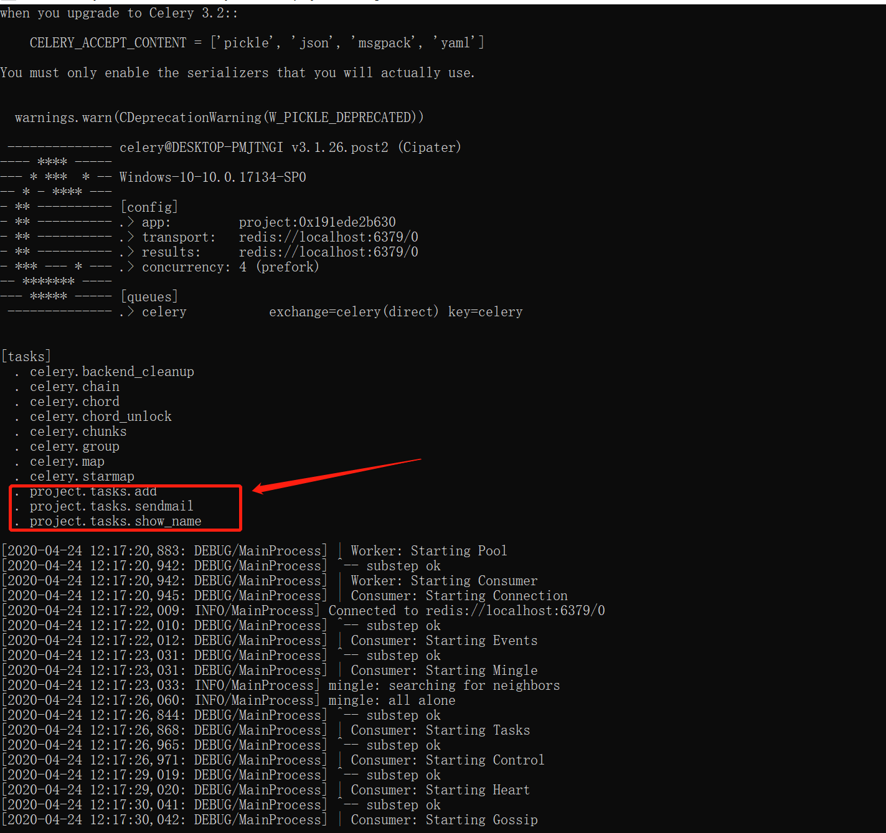

Contents
10. 分布式队列管理Cerely¶
Celery 是一个基于Python开发的分布式异步消息任务队列，其可以有助于轻松地实现任务的异步处理，如果我们的业务场景中需要用到异步任务，则可以考虑使用Celery。
下面举例工作中常见的例子：
你想对100台机器执行一条批量命令，可能会花很长时间 ，但你不想让你的程序等着结果返回，而是给你返回 一个任务ID,你过一段时间只需要拿着这个任务id就可以拿到任务执行结果， 在任务执行ing进行时，你可以继续做其它的事情。
你想做一个定时任务，比如每天检测一下你们所有客户的资料，如果发现今天 是客户的生日，就给他发个短信祝福
10.1. Celery有以下优点：¶
简单：一单熟悉了celery的工作流程后，配置和使用还是比较简单的
高可用：当任务执行失败或执行过程中发生连接中断，celery 会自动尝试重新执行任务
快速：一个单进程的celery每分钟可处理上百万个任务
灵活： 几乎celery的各个组件都可以被扩展及自定制
Celery基本工作流程图
10.2. Demo演示¶
安装redis、启动redis
启动一个面安装的redis，解压后直接bin下执行redis-server

pip命令来安装Celery及celery-with-redis，命令如下所示：
pip install celery
pip install celery-with-redis
10.2.1. 简单使用¶
目录结构：
project/
├── __init__.py
├── config.py
└── tasks.py
各目录文件说明：
init.py:初始化Celery以及加载配置文件
#!/usr/bin/env python3
# -*- coding:utf-8 -*-
# Author:wd
from celery import Celery
app = Celery('project') # 创建 Celery 实例
app.config_from_object('project.config') # 加载配置模块
config.py: Celery相关配置文件，更多配置参考：http://docs.celeryproject.org/en/latest/userguide/configuration.html
Celery的默认设置就能满足基本的要求，worker以Pool模式启动，默认大小为CPU核心数量，序列化机制默认是pickle，但也可以指定为JSON.由于Python调用Linux比较容易，所有将Celery作为异步任务处理框架非常合适。
#!/usr/bin/env python3
# -*- coding:utf-8 -*-
# Author:wd
BROKER_URL = 'redis://localhost:6379/0' # Broker配置，使用Redis作为消息中间件
CELERY_RESULT_BACKEND = 'redis://localhost:6379/0' # BACKEND配置，这里使用redis
CELERY_RESULT_SERIALIZER = 'json' # 结果序列化方案
CELERY_TASK_RESULT_EXPIRES = 60 * 60 * 24 # 任务过期时间
CELERY_TIMEZONE = 'Asia/Shanghai' # 时区配置
CELERY_IMPORTS = ( # 指定导入的任务模块,可以指定多个
'project.tasks',
)
tasks.py ：任务定义文件
#!/usr/bin/env python
# -*- coding:utf8 -*-
# auther; 18793
# Date：2020/4/24 11:59
# filename: tasks.py
import time
from project import app
@app.task
def show_name(name):
return name
@app.task
def sendmail(mail):
print("sendmail to {}.....".format(mail["to"]))
time.sleep(2.0)
print("mail sent .")
@app.task
def add(x, y):
return x + y
启动Worker：
celery worker -A project -l debug
各个参数含义：
worker: 代表第启动的角色是work当然还有beat等其他角色；
-A ：项目路径，这里我的目录是project
-l：启动的日志级别，更多参数使用celery --help查看
查看日志输出，会发现我们定义的任务，以及相关配置：

虽然启动了worker，但是我们还需要通过delay或apply_async来将任务添加到worker中，这里我们通过交互式方法添加任务，并返回AsyncResult对象，通过AsyncResult对象获取结果：
worker01.py
#!/usr/bin/env python
# -*- coding:utf8 -*-
# auther; 18793
# Date：2020/4/24 12:10
# filename: worker01.py
from project import tasks
t = tasks.show_name.delay("wd")
print(t.get())
worker02.py
#!/usr/bin/env python
# -*- coding:utf8 -*-
# auther; 18793
# Date：2020/4/24 12:10
# filename: worker01.py
from project import tasks
# 模拟发送邮件
t = tasks.sendmail.delay(dict(to="1879324764@qq.com"))
AsyncResult除了get方法用于常用获取结果方法外还提以下常用方法或属性：
* state: 返回任务状态；
* task_id: 返回任务id；
* result: 返回任务结果，同get()方法；
* ready(): 判断任务是否以及有结果，有结果为True，否则False；
* info(): 获取任务信息，默认为结果；
* wait(t): 等待t秒后获取结果，若任务执行完毕，则不等待直接获取结果，若任务在执行中，则wait期间一直阻塞，直到超时报错；
* successfu(): 判断任务是否成功，成功为True，否则为False；